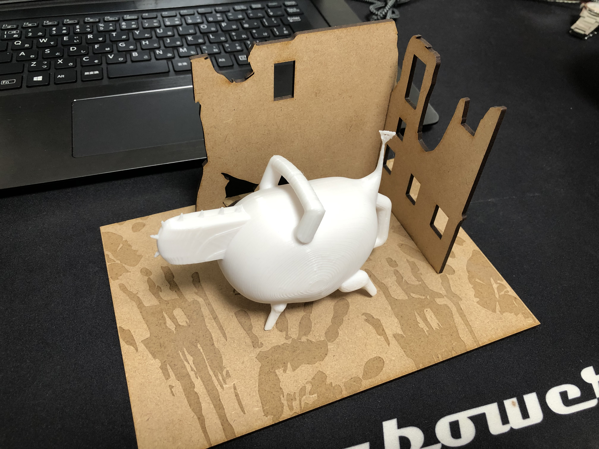

<!DOCTYPE html>
<html lang="ja"></html>
<head>
    <meta charset="UTF-8" />
    <title>mdf製作</title>
    <link rel="stylesheet" type="text/css" href="css/2.css">
</head>

<body>
    <h1>mdf製作</h1>
    <p>今回の課題---こころを動かす<br>
    私は怖いものが好きなので、ひとに「不気味」と思わせるようなものを作りました。</p>
    
    <p>Adbe illustで作業し、土台には片目と手形を掘り、二枚だけで
        壁を作ることで廃墟感を前面に出しました。<br>色まで塗れなかったので少ししょぼい感じになってしまいました。</p>
        
    <p>前回の課題で作ったピンセットを一緒に置くと、一個のフィギュアみたいになってよかったです。</p>
</body>